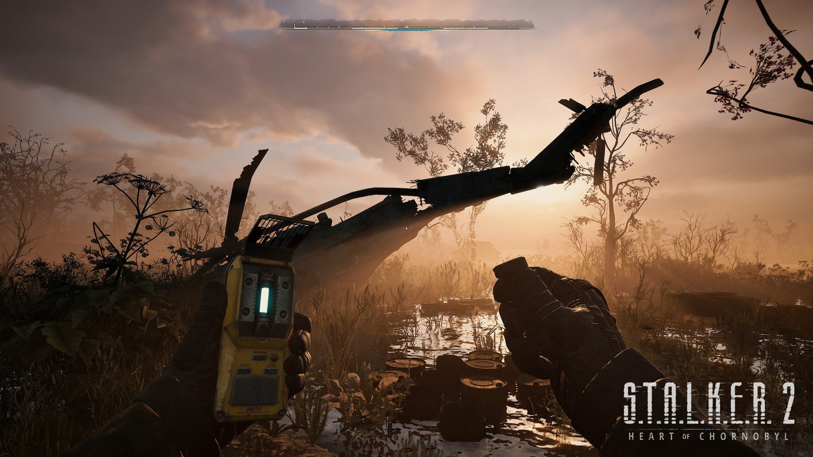
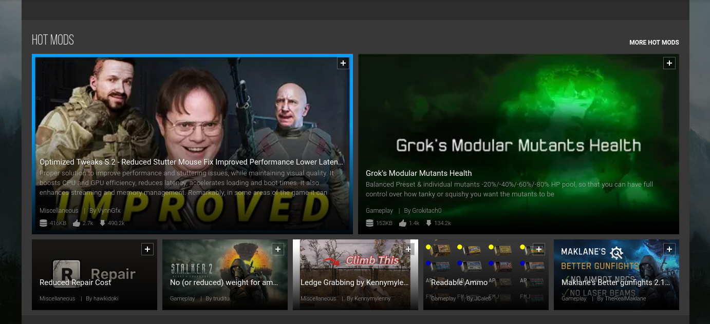

STALKER 2: Heart of Chornobyl
"STALKER 2: Heart of Chornobyl" es la tan esperada secuela del aclamado juego original que redefinió los estándares de los juegos de supervivencia y acción en mundos abiertos. Situado en la icónica zona de exclusión de Chernóbil, este título nos sumerge en un universo lleno de misterio, peligro y belleza postapocalíptica.
El juego ofrece un mundo abierto inmenso y lleno de detalles, donde las anomalías físicas desafían las leyes de la naturaleza, y las criaturas mutadas representan amenazas constantes. Con una narrativa profundamente envolvente, "STALKER 2" promete una experiencia donde cada decisión tiene un impacto, desde las alianzas con facciones hasta la forma en que enfrentamos los desafíos del entorno.
Equipado con gráficos de última generación y una banda sonora inmersiva, "STALKER 2" no es solo un videojuego, sino una experiencia que transporta a los jugadores a un lugar que es tan aterrador como fascinante. Ya seas un fanático de la franquicia o un recién llegado, este juego garantiza horas de exploración, combate y descubrimiento en uno de los entornos más únicos de los videojuegos.
Esta secuela, llevaba planeada nada más ni nada menos que desde el 2011. Pero por esas fechas, el estudio enfrentó la bancarrota y un cierre. Y después de volver a fundarse por 2017, GSC tuvo que enfrentarse a la pandemia, la invasión de Rusia que les obligó a cambiar de ubicación a Praga, un leakeo de datos e incluso un incendio en las oficinas. Parece mentira que el juego haya salido finalmente, Y más en un estado "jugable". Enfrenta los típicos problemas que conocemos en la industria hoy en día: bugs, optimización dudosa, etc. Pero el hecho de que esté fuera y de que ya cuente con 2 parches una semana despueś de su lanzamiento, indica que el juego va por el bien camino. Ya que el equipo ha dejado claro, que quieren seguir añadiendo contenido, además de un modo multijudaro (se desconoce la modalidad concreta hasta el momento) y expansiones en forma de DLC más adelante.

GSC dijo desde el primer momento, que el juego contaría con soporte total para mods. Los modders son un pilar fundamental en esta saga de videojuegos, básicamente sin ellos Stalker habría desaparecido del ojo público, estos modders se han encargado de mantener vivo el nicho que es esta obra y el mundo que la rodea. No han tardado ni 1 día y en la página de Nexus Mods, ya están disponibles una decente cantidad de ellos para mejorar los problemas antes descritos. O casi todos al menos. Desde mejoras de rendimiento, cambios al nombre de las armas, comportamientos de NPCs, etc. Por el momento está algo limitados a la hora de modear, pudiendo solo cambiar valores dentro del juego. Habrá que estar al tanto de si GSC finalmente pública las herramientas de mods oficiales y ya se podrá ver alguna que otra cosa más técnica.
S.T.A.L.K.E.R. 2: Heart Of Chernobyl está disponible para consolas Xbox Series X, S, PC y además está disponible también en Xbox Gamepass desde el día 1. Nunca fue tan mejor momento para volver a la zona de Exclusión y empaparnos de una buena atmosfera seguida de una historia excelente que nos dejarán momentos inolvidables. Buena caza, Stalker.